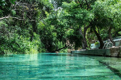
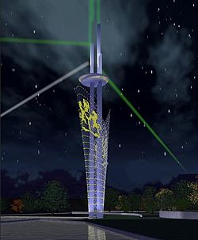

A Nigéria é um país com muitas florestas e parques florestais maravilhosos trazendo vários turistas para visitá-los.
O Parque Nacional Yankari é um grande parque de vida selvagem localizado na parte centro-sul do estado de Bauchi , no nordeste da Nigéria . Abrange uma área de cerca de 2.244 quilômetros quadrados (866 milhas quadradas) e é o lar de várias fontes naturais de água quente, além de uma grande variedade de flora e fauna.
O projeto Torre do Milênio e Centro Cultural é um dos vários projetos da cidade de Abuja, capital do distrito central da Nigéria, a construção da torre começou em 2006 e foi concluída em 2014, enquanto o centro cultural ainda está em construção.
A ilha de Lagos é ligada ao continente por três grandes pontes que cruzam a lagoa de Lagos ao distrito de Ebute Metta. Também é ligada pelas ilhas vizinhas de Ikoyi e Victoria. O porto de Lagos, distrito de Apapa aponta para o lado oeste da ilha. Formando o principal distrito comercial de Lagos, a ilha de mesmo nome acolhe os principais prédios do governo, shoppings e escritórios. A parte mais pobre localiza-se ao lado leste da ilha, contendo os principais mercados e casas humildes. A ilha abriga ainda, as igrejas Católica e Anglicana, além de uma Mesquita.